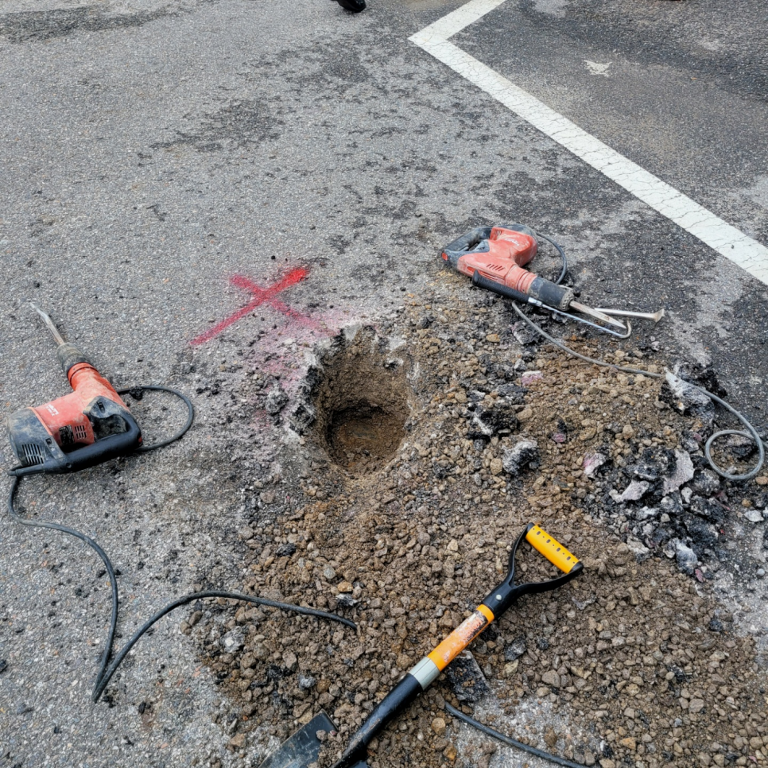
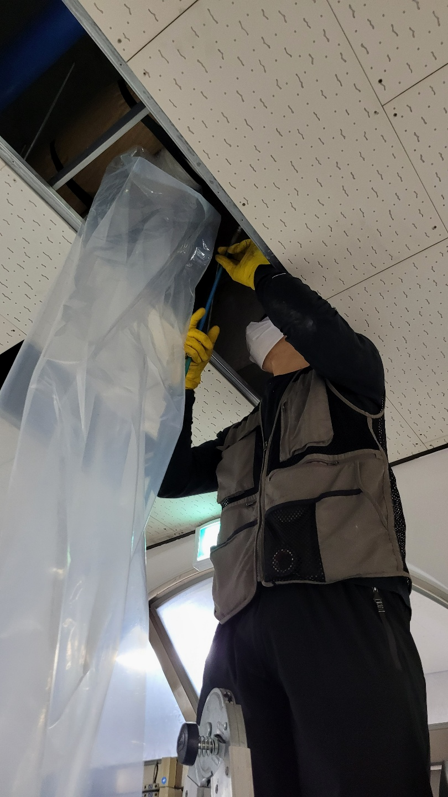
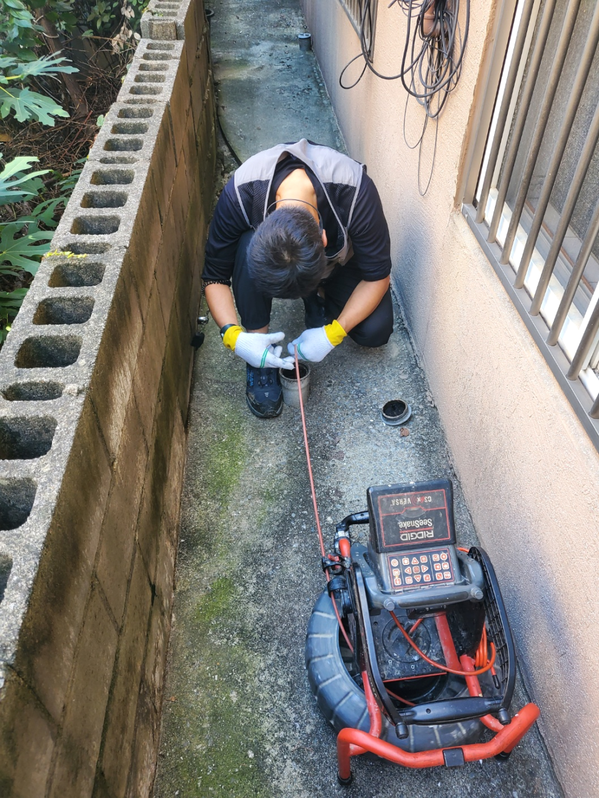
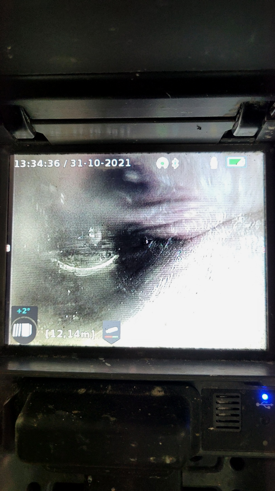
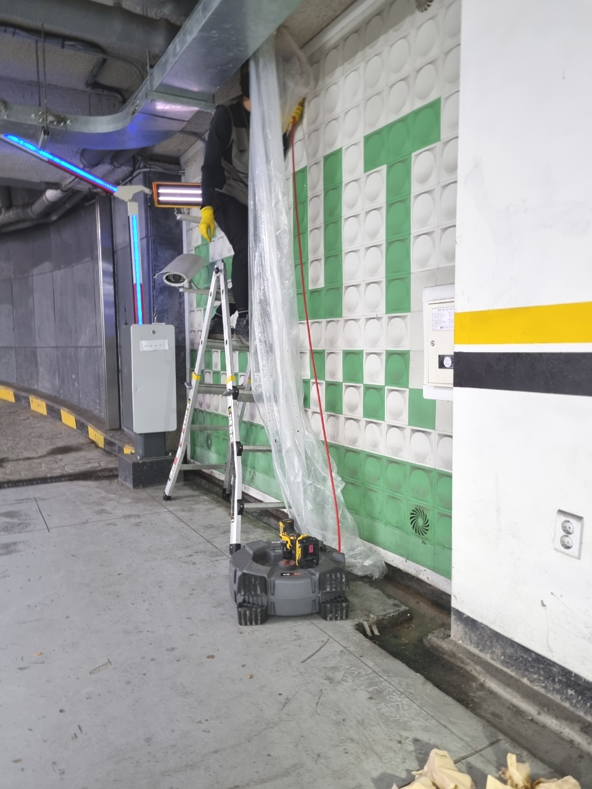
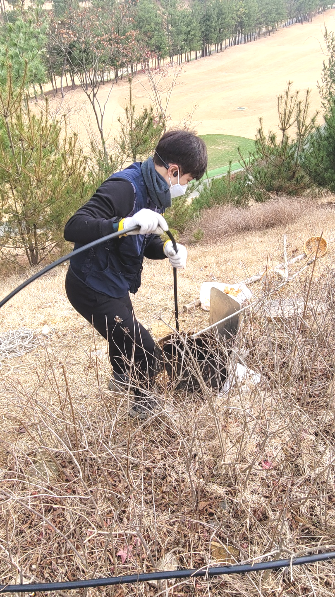

🏠 안성 공도하수구막힘 뚫음 불당리 공도읍 하수구역류 뚫는 설비업체
안성 싱크대막힘 전문 시공 후기

📋 작업 개요
- 위치: 안성
- 서비스 유형: 싱크대막힘, 변기막힘, 하수구막힘, 배관막힘, 역류해결, 뚫는업체, 배관청소, 고압세척, 설비공사, 배관보수
- 작업 일시: 2023. 10. 25. 0:27
- 업체명: 하수구수사대 (010-5615-2118)
🔍 문제 상황
안녕하십니까^^
설비전문업체 "하수구수사대"를 찾아주셔서 감사합니다^^
우리가 살아가는데 있어서 의식주는 필수인데요 그가운데 식을 담당하는 공간인 주방 퇴수막힘이 생길경우 위생부분에서 걱정이 될 것입니다.
만약 배출구배관 이물질이 없다면 작업할 곳에 약 5cm의 오차 범위 내에서 정확한 위치 파악이 가능합니다. 위치를 파악하고서는 바로 작업을 시작하지요. 이물질로 가득했던 배관에 물길을 터주기 위한 작업을 진행했는데요, 타공을 할 때에는 배출구배관 상태를 고려해야 한답니다.
안성 공도하수구막힘 뚫음 불당리 공도읍 하수구역류 뚫는 설비업체

🔎 원인 분석
💡 전문가 진단: 안성 공도하수구막힘 뚫음 불당리 공도읍 하수구역류 뚫는 설비업체
가정집은 물론 상가처럼 큰 건물이나 업체 건물처럼 하수도자체가 큼지막한 곳도 자주 나가서 작업을 합니다. 가정집도 예외 없으면 준비성은 기본이고 금액에 관련해서 우려되시는 분들을위해 기본적으로 유선안내해 드리고 있습니다.
뚫고 난 후에는 벌레 꼬임과 냄새까지 해결이 되는데 무리하게 하수도를 건드렸을 경우 공사를 해야 할상황도 생기니 배관 케어를 할 수 있는업체에 맡기시는 것이 바람직합니다.어디로 해야 할지 고민될 때 실력부터견적 등등 살펴보셔야 할 것들이 있습니다.
평상시 문제없이 잘 사용하다가 별다른 증상 없이 배출이 안되고배관 역류까지 된다면 아마도 이는 갑자기 발생한 일이 아닙니다. 오랜 시간 각종 이물질들이 누적되어 이제서 발생했을 뿐이란 이야기입니다.
너무 급한 생각에 급하게 행동을 취하고 여러 업체를 물어보고 이러다보면 더 지연되어 시간은 시간대로 흐르고 별로 좋지 않은 상황으로 이어지니 하수관막힘이 발행하면 고민하고 있기 보단 즉시 연락을 취하시길 추천드립니다.
사후서비스 까지 확실하게 책임진다는마인드라면 기본가격을 문의해 보세요. 기본가격은 대부분의 업체가 비슷한 선일 텐데요. 기본작업 후 배수 배관내시경으로 여러분의 배관을 검수했을 때 만약 막힘 정도가 심각한 상태라면 추가작업이 필요할 수도 있습니다.
보통배수가 막히게 되면 초반에는 물이 배수되는 속도가 느려지다가 시간이 흐를수록 그 불편함은 더욱 커지기 마련이라서 신속하게 해결하시는 것이 좋습니다

🔧 작업 과정
배관뚫는 작업을 반복하면서 기름 슬러지를 말끔히 제거를 하면서 석션을 해주니 덩어리지거나 굳어서 고정된 오물들이 정말 많이 배출되었는데요. 배관 내부에는 마지막으로 배관 내시경을 통해서 다시 한번 전체적인 검수를 진행하였습니다.
배수관세척할때 고압세척기에서 나오는 강한 힘으로 뿜어져 나오는 물은 이물질을 깨면서 깨진 부분이 물을 타로 흘러나오는 건데요 정확히 방향을 잘 잡으면서 배수관에 필요한 압력만큼 많을 가한다면 안전하게 작업할 수 있습니다.
배출구막힌배관을 뚫을려할때 사용되는최첨단장비로는 빨아드리거나 샤프트를 이용하고 막힌곳에따라 적절한기계를 쓰고있답니다. 무슨상태이든지 그에맞는전문장비들이 갖춰져있어서 우려하시지 않아도되는데요.
저희 배출관 전문가 분들께선 작업에 착수하고 같은문제가 반복될가능성이 있는것을 완벽제거하는것을 최종적인 목표로하고있어요. 혹여라도 배출관 문제재발시 무료로작업하는서비스를 실시하고있어요
어쩌다가한번 막혀버린게아니여도 배관 심각한악취가 퍼지게되는 문제가발생하게되는데요.이러한경우에는 수리하는곳마다 이유가서로틀리기에 정확하게살펴본후 고치고있답니다
하루빨리 배출구뚫는것이 하나밖에없는 대책이란것을 기억하셔야됩답니다.최첨단기계와 많은전문지식을 갖추어진분들로 모여있어서 어디든지 확실하게수리 할수있어요!
어떠한것보다 문제가발생하면 사용할수없어서 평소에생활이 불편해집니다.배출관역류를 안해야하지만 그렇게안된다면 상태가심각해집니다.
배수 내부를 강한 힘으로 이물질들을 빨아들이기 시작하니, 먼지 덩어리는 물론이고 여러 가지 이물질들이 빨려 올라왔고 이 사이에 머리카락 덩어리도 상당량 올라왔습니다. 다행히 딱딱하게 고착화된 오물은 없는 것 같았습니다.
배관 스케일링 검수 완료 후에는 주변 정리, 청소까지 완벽하게 해드리고 있으니 손 하나 까딱하실 필요 없이 저희들의 손만 빌리시면 됩니다.


✅ 작업 완료
우리는 12개월 내로 다시 배수막히면 즉각 방문 드리고 아무 보수 없이 다시금 뚫어드립니다. 한차례 뚫어드릴 때 재발 없이 조치할 자신이 있기 때문입니다.
저희는 가정집뿐만 아니라 상가,빌딩,아파트, 다세대 주택등 배수관막힘 현장이라면 장소를 가리지 않고 배수관막힘 문제를 해결해 드리고 있으니 언제든지 부담없이 연락주세요!
#하수구막힘 #하수구뚫음 #하수구역류 #씽크대막힘 #싱크대역류 #오수관막힘 #하수구청소 #욕실하수구막힘 #변기막힘 #하수구뚫는비용 #싱크대수리 #화장실막힘




⚠️ 주방 싱크대 배관 막힘 예방 수칙
- ✅ 기름기가 묻은 식기나 프라이팬은 설거지 전 키친타올로 반드시 기름때를 닦아내세요.
- ✅ 주기적으로 싱크대 개수대에 뜨거운 물을 가득 받아 한 번에 내려 배관 내부 기름을 씻어내세요.
- ✅ 배수구 거름망을 미세한 필터로 사용하시고 음식물 찌꺼기가 틈으로 새어 들지 않게 관리하세요.
- ✅ 베이킹소다와 식초를 뜨거운 물과 함께 일주일에 한 번씩 부어주면 배관 살균과 막힘 예방에 좋습니다.
💡 핵심 정리
- 확실한 장비 작업(내시경 점검 및 샤프트 스케일링)으로 원인을 뿌리 뽑습니다.
- 작업 후 1년 이내에 동일한 부위 재발 시 100% 무상 A/S 서비스를 보장합니다.
- 서울 · 경기 · 인천 전 지역에 24시간 언제든 긴급 출동할 수 있도록 항시 대기 중입니다.
❓ 자주 묻는 질문 (FAQ)
🚨 안성 싱크대막힘 문제로 고민이신가요?
정확한 원인 진단과 확실한 시공으로 재발 없는 해결을 약속드립니다.
24시간 긴급 출동 | 서울 · 경기 · 인천 전지역 | 1년 내 재발 시 무상 A/S